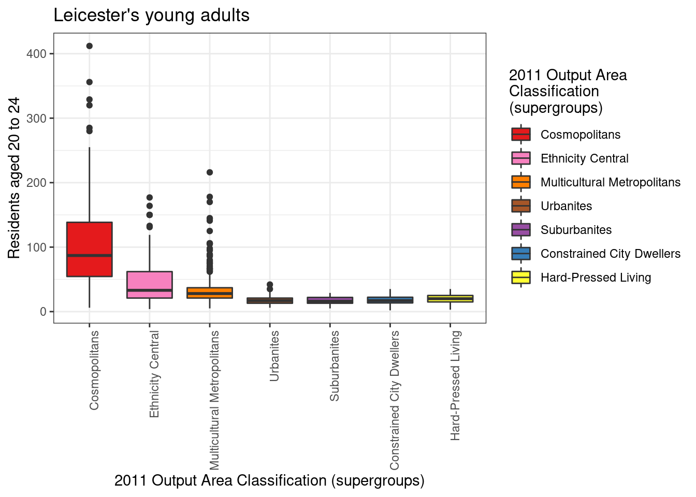
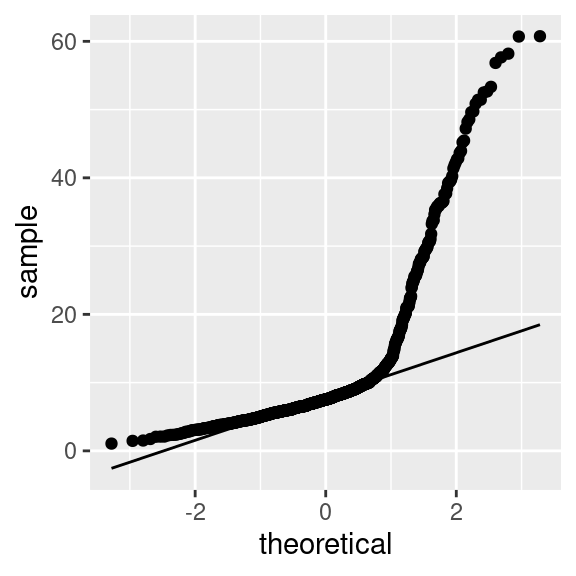

6 Exploratory data analysis
This work is licensed under the GNU General Public License v3.0. Contains public sector information licensed under the Open Government Licence v3.0.
6.1 Introduction
This practical showcases an exploratory analysis of the distribution of people aged 20 to 24 in Leicester, using the u011 variable from the 2011 Output Area Classification (2011OAC) dataset. Create a new R project for this practical session and create a new RMarkdown document to replicate the analysis in this document.
Once the document is set up, start by adding the first R code snipped including the code below, which is loads the 2011OAC dataset and the libraries used for the practical session.
6.2 GGlot2 recap
As seen in the practical session 401, the ggplot2 library is part of the Tidyverse, and it offers a series of functions for creating graphics declaratively, based on the concepts outlined in the Grammar of Graphics. While the dplyr library offers functionalities that cover data manipulation and variable transformations, the ggplot2 library offers functionalities that allow to specify elements, define guides, and apply scale and coordinate system transformations.
- Marks can be specified in
ggplot2using thegeom_functions. - The mapping of variables (table columns) to visual variables can be specified in
ggplot2using theaeselement. - Furthermore, the
ggplot2library:- automatically adds all necessary guides using default table column names, and additional functions can be used to overwrite the defaults;
- provides a wide range of
scale_functions that can be used to control the scales of all visual variables; - provides a series of
coord_fucntions that allow transforming the coordinate system.
Check out the ggplot2 reference for all the details about the functions and options discussed below.
6.3 Data visualisation
6.3.1 Distributions
We start the analysis with a simple histogram, to explore the distribution of the variable u011. RMarkdown allows specifying the height (as well as the width) of the figure as an option for the R snipped, as shown in the example typed out in plain text below.
```{r, echo=TRUE, message=FALSE, warning=FALSE, fig.height = 4}
leicester_2011OAC %>%
ggplot2::ggplot(
aes(
x = u011
)
) +
ggplot2::geom_histogram(binwidth = 5) +
ggplot2::theme_bw()
```The snipped and barchart is included in output documents, as shown below.
leicester_2011OAC %>%
ggplot2::ggplot(
aes(
x = u011
)
) +
ggplot2::geom_histogram(binwidth = 5) +
ggplot2::theme_bw()
If we aim to explore how that portion of the population is distributed among the different supergroups of the 2011OAC, there are a number of charts that would allow us to visualise that relationship.
For instance, the barchart above can be enhanced through the use of the visual variable colour and the fill option. The graphic below uses a few options seen in the practical session 401 to create a stacked barchart, where sections of each bar are filled with the colour associated with a 2011OAC supergroup.
leicester_2011OAC %>%
ggplot2::ggplot(
aes(
x = u011,
fill = fct_reorder(supgrpname, supgrpcode)
)
) +
ggplot2::geom_histogram(binwidth = 5) +
ggplot2::ggtitle("Leicester's young adults") +
ggplot2::labs(
fill = "2011 Output Area\nClassification\n(supergroups)"
) +
ggplot2::xlab("Residents aged 20 to 24") +
ggplot2::ylab("Count") +
ggplot2::scale_fill_manual(
values = c("#e41a1c", "#f781bf", "#ff7f00", "#a65628", "#984ea3", "#377eb8", "#ffff33")
) +
ggplot2::theme_bw()
However, the graphic above is not extremely clear. A boxplot and a violin plot created from the same data are shown below. In both cases, the parameter axis.text.x of the function theme is set to element_text(angle = 90, hjust = 1) in order to orientate the labels on the x-axis vertically, as the supergroup names are rather long, and they would overlap one-another if set horizontally on the x-axis. In both cases, the option fig.height of the R snippet in RMarkdown should be set to a higher value (e.g., 5) to allow for sufficient room for the supergroup names.
leicester_2011OAC %>%
ggplot2::ggplot(
aes(
x = fct_reorder(supgrpname, supgrpcode),
y = u011,
fill = fct_reorder(supgrpname, supgrpcode)
)
) +
ggplot2::geom_boxplot() +
ggtitle("Leicester's young adults") +
ggplot2::labs(
fill = "2011 Output Area\nClassification\n(supergroups)"
) +
ggplot2::xlab("2011 Output Area Classification (supergroups)") +
ggplot2::ylab("Residents aged 20 to 24") +
ggplot2::scale_fill_manual(
values = c("#e41a1c", "#f781bf", "#ff7f00", "#a65628", "#984ea3", "#377eb8", "#ffff33")
) +
ggplot2::theme_bw() +
ggplot2::theme(axis.text.x = element_text(angle = 90, hjust = 1))
leicester_2011OAC %>%
ggplot2::ggplot(
aes(
x = fct_reorder(supgrpname, supgrpcode),
y = u011,
fill = fct_reorder(supgrpname, supgrpcode)
)
) +
ggplot2::geom_violin() +
ggtitle("Leicester's young adults") +
ggplot2::labs(
fill = "2011 Output Area\nClassification\n(supergroups)"
) +
ggplot2::xlab("2011 Output Area Classification (supergroups)") +
ggplot2::ylab("Residents aged 20 to 24") +
ggplot2::scale_fill_manual(
values = c("#e41a1c", "#f781bf", "#ff7f00", "#a65628", "#984ea3", "#377eb8", "#ffff33")
) +
ggplot2::theme_bw() +
ggplot2::theme(axis.text.x = element_text(angle = 90, hjust = 1))
6.3.2 Relationships
The first barchart above seems to illustrate that the distribution might be skewed towards the left, with most values seemingly below 50. However, that tells only part of the story about how people aged 20 to 24 are distributed in Leicester. In fact, each Output Area (OA) has a different total population. So, a higher number of people aged 20 to 24 living in an OA might be simply due to the OA been more populous than others. Thus, the next step is to compare u011 to Total_Population, for instance, through a scatterplot such as the one seen in the practical session 401, reported below.
leicester_2011OAC %>%
ggplot2::ggplot(
aes(
x = Total_Population,
y = u011,
colour = fct_reorder(supgrpname, supgrpcode)
)
) +
ggplot2::geom_point(size = 0.5) +
ggplot2::ggtitle("Leicester's young adults") +
ggplot2::labs(
colour = "2011 Output Area\nClassification\n(supergroups)"
) +
ggplot2::xlab("Total number of residents") +
ggplot2::ylab("Residents aged 20 to 24") +
ggplot2::scale_y_log10() +
ggplot2::scale_colour_brewer(palette = "Set1") +
ggplot2::scale_colour_manual(
values = c("#e41a1c", "#f781bf", "#ff7f00", "#a65628", "#984ea3", "#377eb8", "#ffff33")
) +
ggplot2::theme_bw()
6.4 Exercise 304.1
Question 304.1.1: Which one of the boxplot or violin plot above do you think better illustrate the different distributions, and what do the two graphics say about the distribution of people aged 20 to 24 in Leicester? Write a short answer in your RMarkdown document (max 200 words).
Question 304.1.2: Create a jittered points plot (see geom_jitter) visualisation illustrating the same data shown in the boxplot and violin plot above.
Question 304.1.3: Create the code necessary to calculate a new column named perc_age_20_to_24, which is the percentage of people aged 20 to 24 (i.e., u011) over total population per OA Total_Population, and create a boxplot visualising the distribution of the variable per 2011OAC supergroup.
6.5 Exploratory statistics
The graphics above provide preliminary evidence that the distribution of people aged 20 to 24 might, in fact, be different in different 2011 supergroups. In the remainder of the practical session, we are going to explore that hypothesis further. First, load the necessary statistical libraries.
The code below calculates the percentage of people aged 20 to 24 (i.e., u011) over total population per OA, but it also recodes (see recode) the names of the 2011OAC supergroups to a shorter 2-letter version, which is useful for the tables presented further below.
Only the OA code, the recoded 2011OAC supergroup name, and the newly created perc_age_20_to_24 are retained in the new table leic_2011OAC_20to24. Such a step is sometimes useful as stepping stone for further analysis and can make the code easier to read further down the line. Sometimes it is also a necessary step when interacting with certain libraries, which are not fully compatible with Tidyverse libraries, such as leveneTest.
leic_2011OAC_20to24 <- leicester_2011OAC %>%
dplyr::mutate(
perc_age_20_to_24 = (u011 / Total_Population) * 100,
supgrpname = dplyr::recode(supgrpname,
`Suburbanites` = "SU",
`Cosmopolitans` = "CP",
`Multicultural Metropolitans` = "MM",
`Ethnicity Central` = "EC",
`Constrained City Dwellers` = "CD",
`Hard-Pressed Living` = "HP",
`Urbanites` = "UR"
)
) %>%
dplyr::select(OA11CD, supgrpname, perc_age_20_to_24)
leic_2011OAC_20to24 %>%
dplyr::slice_head(n = 5) %>%
knitr::kable()| OA11CD | supgrpname | perc_age_20_to_24 |
|---|---|---|
| E00069517 | SU | 4.153355 |
| E00069514 | CP | 30.650155 |
| E00169516 | MM | 12.316716 |
| E00169048 | MM | 6.956522 |
| E00169044 | MM | 6.211180 |
6.5.1 Descriptive statistics
The first step of any statistical analysis or modelling should be to explore the “shape” of the data involved, by looking at the descriptive statistics of all variables involved. The function stat.desc of the pastecs library provides three series of descriptive statistics.
base:nbr.val: overall number of values in the dataset;nbr.null: number ofNULLvalues – NULL is often returned by expressions and functions whose values are undefined;nbr.na: number ofNAs – missing value indicator;
desc:min(see alsominfunction): minimum value in the dataset;max(see alsomaxfunction): minimum value in the dataset;range: difference betweenminandmax(different fromrange());sum(see alsosumfunction): sum of the values in the dataset;median(see alsomedianfunction): median, that is the value separating the higher half from the lower half the valuesmean(see alsomeanfunction): arithmetic mean, that issumover the number of values notNA;SE.mean: standard error of the mean – estimation of the variability of the mean calculated on different samples of the data (see also central limit theorem);CI.mean.0.95: 95% confidence interval of the mean – indicates that there is a 95% probability that the actual mean is within that distance from the sample mean;var: variance (\(\sigma^2\)), it quantifies the amount of variation as the average of squared distances from the mean;std.dev: standard deviation (\(\sigma\)), it quantifies the amount of variation as the square root of the variance;coef.var: variation coefficient it quantifies the amount of variation as the standard deviation divided by the mean;
norm(default isFALSE, usenorm = TRUEto include it in the output):skewness: skewness value indicates- positive: the distribution is skewed towards the left;
- negative: the distribution is skewed towards the right;
kurtosis: kurtosis value indicates:- positive: heavy-tailed distribution;
- negative: flat distribution;
skew.2SEandkurt.2SE: skewness and kurtosis divided by 2 standard errors. If greater than 1, the respective statistics is significant (p < .05);normtest.W: test statistics for the Shapiro–Wilk test for normality;normtest.p: significance for the Shapiro–Wilk test for normality.
The Shapiro–Wilk test compares the distribution of a variable with a normal distribution having the same mean and standard deviation. The null hypothesis of the Shapiro–Wilk test is that the sample is normally distributed, thus if normtest.p is lower than 0.01 (i.e., p < .01), the test indicates that the distribution is most probably not normal. The threshold to accept or reject a hypothesis is arbitrary and based on conventions, where p < .01 is the most commonly accepted threshold, or p < .05 for relatively small data sample (e.g., 30 cases).
The next step is thus to apply the stat.desc to the variable we are currently exploring (i.e., perc_age_20_to_24), including the norm section.
leic_2011OAC_20to24_stat_desc <- leic_2011OAC_20to24 %>%
dplyr::select(perc_age_20_to_24) %>%
pastecs::stat.desc(norm = TRUE)
leic_2011OAC_20to24_stat_desc %>%
knitr::kable(digits = 3)| perc_age_20_to_24 | |
|---|---|
| nbr.val | 969.000 |
| nbr.null | 0.000 |
| nbr.na | 0.000 |
| min | 1.064 |
| max | 60.751 |
| range | 59.687 |
| sum | 10238.502 |
| median | 7.514 |
| mean | 10.566 |
| SE.mean | 0.304 |
| CI.mean.0.95 | 0.596 |
| var | 89.386 |
| std.dev | 9.454 |
| coef.var | 0.895 |
| skewness | 2.710 |
| skew.2SE | 17.249 |
| kurtosis | 7.707 |
| kurt.2SE | 24.549 |
| normtest.W | 0.645 |
| normtest.p | 0.000 |
The table above tells us that all 969 OA in Leicester have a valid value for the variable perc_age_20_to_24, as no NULL nor NA value have been found. The values vary from about 1% to almost 61%, with an average value of 11% of the population in an OA aged between 20 and 24.
The short paragraph above is reporting on the values on the table, taking advantage of two features of RMarkdown. First, the output of the stat.desc function in the snippet further above is stored in the variable leic_2011OAC_20to24_stat_desc, which is then a valid variable for the rest of the document. Second, RMarkdown allows for in-line R snippets, that can also refer to variables defined in any snippet above the text. As such, the source of the paragraph above reads as below, with the in-line R snipped opened by a single grave accent (i.e., `) followed by a lowercase r and closed by another single grave accent.
Having included all the code above into an RMarkdown document, copy the text below verbatim into the same RMarkdown document and make sure that you understand how the code in the in-line R snippets works.
The table above tells us that all `r "\u0060r leic_2011OAC_20to24_stat_desc[\"nbr.val\",
\"perc_age_20_to_24\"] %>% round(digits = 0)\u0060"` OA in Leicester have a valid
value for the variable `perc_age_20_to_24`, as no `r "\u0060NULL\u0060"` nor `r
"\u0060NA\u0060"` value have been found.The values vary from about `r "\u0060r
leic_2011OAC_20to24_stat_desc[\"min\", \"perc_age_20_to_24\"] %>% round(digits =
0)\u0060"`% to almost `r "\u0060r leic_2011OAC_20to24_stat_desc[\"max\",
\"perc_age_20_to_24\"] %>% round(digits = 0)\u0060"`%, with an average value of
`r "\u0060r leic_2011OAC_20to24_stat_desc[\"mean\", \"perc_age_20_to_24\"] %>%
round(digits = 0)\u0060"`% of the population in an OA aged between 20 and 24. If the data described by statistics presented in the table above was a random sample of a population, the 95% confidence interval CI.mean.0.95 would indicate that we can be 95% confident that the actual mean of the distribution is somewhere between 10.566 - 0.596 = 9.97% and 10.566 + 0.596 = 11.162%.
However, this is not a sample. Thus the statistical interpretation is not valid, in the same way that the sum values doesn’t make sense, as it is the sum of a series of percentages.
Both skew.2SE and kurt.2SE are greater than 1, which indicate that the skewness and kurtosis values are significant (p < .05). The skewness is positive, which indicates that the distribution is skewed towards the left (low values). The kurtosis is positive, which indicates that the distribution is heavy-tailed.
As such, perc_age_20_to_24 having a heavy-tailed distribution skewed towards low values, it is not surprising that the normtest.p value indicates that the Shapiro–Wilk test is significant, which indicates that the distribution is not normal.
The code below present the output of the shapiro.test function, which only present the outcome of a Shapiro–Wilk test on the values provided as input. The output values are the same as the values reported by the norm section of stat.desc. Note that the shapiro.test function require the argument to be a numeric vector. Thus the pull function must be used to extract the perc_age_20_to_24 column from leic_2011OAC_20to24 as a vector, whereas using select with a single column name as the argument would produce as output a table with a single column.
##
## Shapiro-Wilk normality test
##
## data: .
## W = 0.64491, p-value < 2.2e-16The two code snippets below can be used to visualise a density-based histogram including the shape of a normal distribution having the same mean and standard deviation, and a Q-Q plot, to visually confirm the fact that perc_age_20_to_24 is not normally distributed.
leic_2011OAC_20to24 %>%
ggplot2::ggplot(
aes(
x = perc_age_20_to_24
)
) +
ggplot2::geom_histogram(
aes(
y =..density..
),
binwidth = 5
) +
ggplot2::stat_function(
fun = dnorm,
args = list(
mean = leic_2011OAC_20to24 %>% pull(perc_age_20_to_24) %>% mean(),
sd = leic_2011OAC_20to24 %>% pull(perc_age_20_to_24) %>% sd()
),
colour = "red", size = 1
)
A Q-Q plot in R can be created using a variety of functions. In the example below, the plot is created using the stat_qq and stat_qq_line functions of the ggplot2 library. Note that the perc_age_20_to_24 variable is mapped to a particular option of aes that is sample.
If perc_age_20_to_24 had been normally distributed, the dots in the Q-Q plot would be distributed straight on the line included in the plot.
leic_2011OAC_20to24 %>%
ggplot2::ggplot(
aes(
sample = perc_age_20_to_24
)
) +
ggplot2::stat_qq() +
ggplot2::stat_qq_line()
6.6 Exercise 304.2
Create a new RMarkdown document, and add the code necessary to recreate the table leic_2011OAC_20to24 used in the example above. Use the code below to re-shape the table leic_2011OAC_20to24 by pivoting the perc_age_20_to_24 column wider into multiple columns using supgrpname as new column names.
leic_2011OAC_20to24_supgrp <- leic_2011OAC_20to24 %>%
tidyr::pivot_wider(
names_from = supgrpname,
values_from = perc_age_20_to_24
)That manipulation creates one column per supergroup, containing the perc_age_20_to_24 if the OA is part of that supergroup, or an NA value if the OA is not part of the supergroup. The transformation is illustrated in the two tables below. The first shows an extract from the original leic_2011OAC_20to24 dataset, followed by the wide version leic_2011OAC_20to24_supgrp.
| OA11CD | supgrpname | perc_age_20_to_24 |
|---|---|---|
| E00068657 | HP | 6.053 |
| E00068658 | MM | 6.964 |
| E00068659 | MM | 8.383 |
| E00068660 | MM | 4.643 |
| E00068661 | MM | 10.625 |
| E00068662 | MM | 8.284 |
| E00068663 | MM | 8.357 |
| E00068664 | MM | 3.597 |
| E00068665 | MM | 7.068 |
| E00068666 | MM | 5.864 |
| OA11CD | SU | CP | MM | EC | CD | HP | UR |
|---|---|---|---|---|---|---|---|
| E00068657 | NA | NA | NA | NA | NA | 6.053 | NA |
| E00068658 | NA | NA | 6.964 | NA | NA | NA | NA |
| E00068659 | NA | NA | 8.383 | NA | NA | NA | NA |
| E00068660 | NA | NA | 4.643 | NA | NA | NA | NA |
| E00068661 | NA | NA | 10.625 | NA | NA | NA | NA |
| E00068662 | NA | NA | 8.284 | NA | NA | NA | NA |
| E00068663 | NA | NA | 8.357 | NA | NA | NA | NA |
| E00068664 | NA | NA | 3.597 | NA | NA | NA | NA |
| E00068665 | NA | NA | 7.068 | NA | NA | NA | NA |
| E00068666 | NA | NA | 5.864 | NA | NA | NA | NA |
Question 304.2.1: The code below uses the newly created leic_2011OAC_20to24_supgrp table to calculate the descriptive statistics calculated for the variable leic_2011OAC_20to24 for each supergroup. Is leic_2011OAC_20to24 normally distributed in any of the subgroups? If yes, which supergroups and based on which values do you justify that claim? (Write up to 200 words)
leic_2011OAC_20to24_supgrp %>%
dplyr::select(-OA11CD) %>%
pastecs::stat.desc(norm = TRUE) %>%
knitr::kable(digits = 3)| SU | CP | MM | EC | CD | HP | UR | |
|---|---|---|---|---|---|---|---|
| nbr.val | 54.000 | 83.000 | 573.000 | 57.000 | 36.000 | 101.000 | 65.000 |
| nbr.null | 0.000 | 0.000 | 0.000 | 0.000 | 0.000 | 0.000 | 0.000 |
| nbr.na | 915.000 | 886.000 | 396.000 | 912.000 | 933.000 | 868.000 | 904.000 |
| min | 1.462 | 3.141 | 2.490 | 2.066 | 1.064 | 1.515 | 2.256 |
| max | 9.562 | 60.751 | 52.507 | 36.299 | 12.963 | 11.261 | 13.505 |
| range | 8.100 | 57.609 | 50.018 | 34.233 | 11.899 | 9.746 | 11.249 |
| sum | 295.867 | 2646.551 | 5214.286 | 838.415 | 252.108 | 619.266 | 372.010 |
| median | 5.476 | 30.457 | 7.880 | 10.881 | 6.854 | 6.053 | 5.380 |
| mean | 5.479 | 31.886 | 9.100 | 14.709 | 7.003 | 6.131 | 5.723 |
| SE.mean | 0.233 | 1.574 | 0.230 | 1.373 | 0.471 | 0.172 | 0.264 |
| CI.mean.0.95 | 0.467 | 3.131 | 0.452 | 2.751 | 0.956 | 0.341 | 0.528 |
| var | 2.929 | 205.556 | 30.285 | 107.523 | 7.983 | 2.980 | 4.545 |
| std.dev | 1.712 | 14.337 | 5.503 | 10.369 | 2.825 | 1.726 | 2.132 |
| coef.var | 0.312 | 0.450 | 0.605 | 0.705 | 0.403 | 0.282 | 0.372 |
| skewness | 0.005 | 0.067 | 3.320 | 0.633 | 0.322 | 0.124 | 1.042 |
| skew.2SE | 0.008 | 0.127 | 16.266 | 1.001 | 0.410 | 0.258 | 1.753 |
| kurtosis | -0.391 | -0.825 | 15.143 | -1.009 | -0.142 | 0.220 | 1.441 |
| kurt.2SE | -0.306 | -0.789 | 37.156 | -0.810 | -0.093 | 0.231 | 1.229 |
| normtest.W | 0.991 | 0.980 | 0.684 | 0.889 | 0.965 | 0.993 | 0.937 |
| normtest.p | 0.954 | 0.239 | 0.000 | 0.000 | 0.310 | 0.886 | 0.002 |
Question 304.2.2: Write the code necessary to test again the normality of leic_2011OAC_20to24 for the supergroups where the analysis conducted for Question 304.2.1 indicated they are normal, using the function shapiro.test, and draw the respective Q-Q plot.
Question 304.2.3: Observe the output of the Levene’s test executed below. What does the result tell you about the variance of perc_age_20_to_24 in supergroups?
## Levene's Test for Homogeneity of Variance (center = median)
## Df F value Pr(>F)
## group 6 62.011 < 2.2e-16 ***
## 962
## ---
## Signif. codes: 0 '***' 0.001 '**' 0.01 '*' 0.05 '.' 0.1 ' ' 1